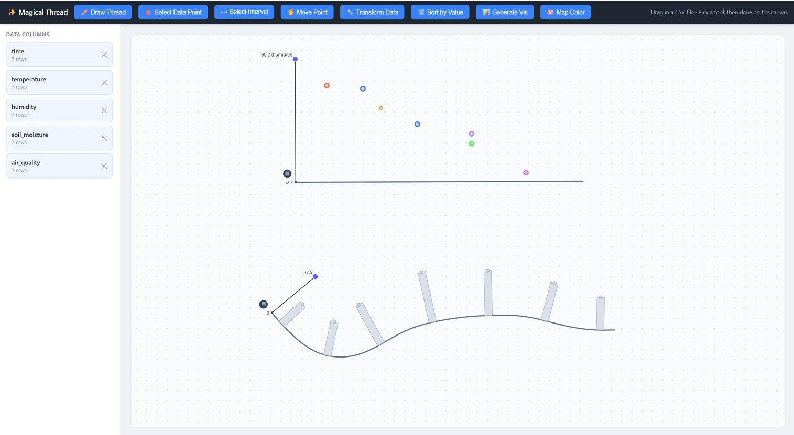

Magical Thread
Overview
Most data visualization tools separate authoring from exploration: users select a chart type from a fixed gallery, bind data to predetermined encodings, and obtain an opaque result that is difficult to question or reshape. This makes open-ended exploration of one's own data awkward, since altering the view often means starting over. We present Magical Thread, a canvas-based visualization tool in which users freely construct visualizations by hand drawing a thread, dragging data onto it, and stacking composable function cards that transform, encode, and re-express the data. Rather than choosing a chart, users build one incrementally: scatter, line, bar, and multi-dimensional plots all emerge from the same lightweight primitives. Each function card is a concrete, draggable object that can be enabled, disabled, deleted, reordered, and copied, forming an ordered, order-sensitive, and fully non destructive pipeline in which every automated suggestion remains a proposal the user can override. Central to our design is the treatment of the thread as an interaction substrate: a single, minimal primitive that carries data, geometry, and operations, and onto which visualizations are composed. A key question we investigate is the expressiveness of this substrate, specifically how wide a range of visualizations and exploratory actions can be supported by threads and function cards without introducing new, special-purpose machinery. Wedescribe the system's design and architecture, in which each new capability is added purely by registering a new card type, and through a set of use cases we show that treating the thread-plus-pipeline as the primary artifact makes visualization construction itself a transparent, reversible, and extensible medium for data exploration.
Tech Stack
- JavaScript
- React
Demo
